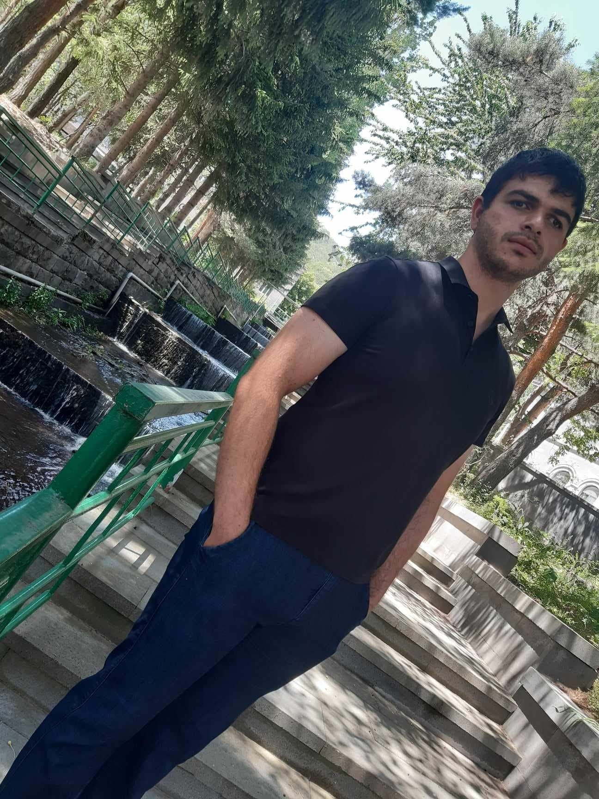

Արթուր Պետրոսյան
Խոհարար
Իմ Մասին
Ես Արթուր Պետրոսյան եմ՝ Խոհարար, սովորել եմ խոհարարական ստուդիայում, աշխատանքային փորձ չունեմ:
Հմտություններ
- Արագ և մաքուր պատրաստում
- Կերակուրի դիզայն
- Թիմային կառավարում
- Անվտանգություն և հիգիենա
Կապ
📧 artur17-00@inbox.ru
📱 +374 94 20 66 86